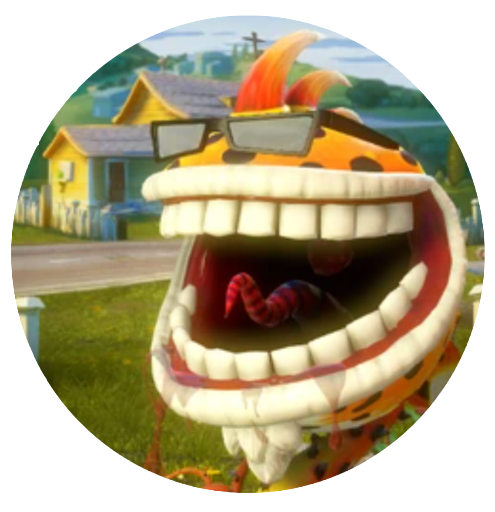

Home
LinkedIn
Itch.io
UX Research

Project Page
Sleep Inc Project Page
Quater Long research project in HCI and UX design
Our Problem Statement
How might we present reliable, consistent, engaging, and relevant sleep tracking for young adults who struggle to stay on top of their wellbeing?